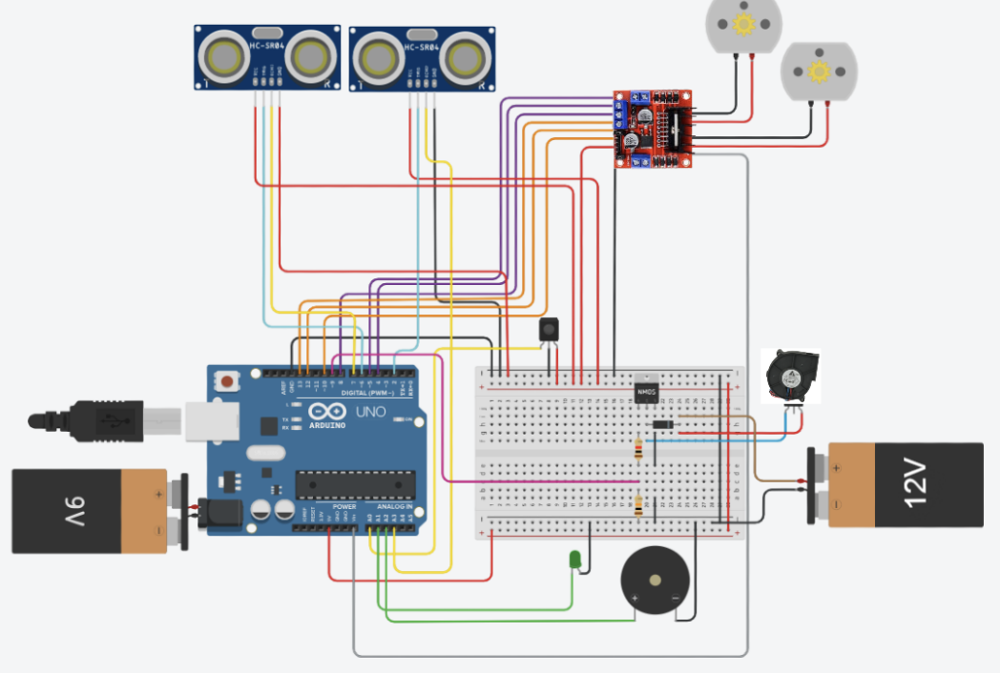
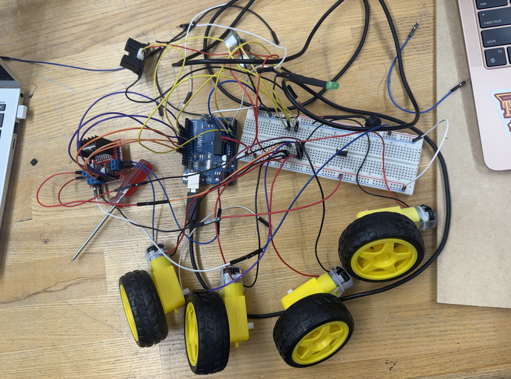
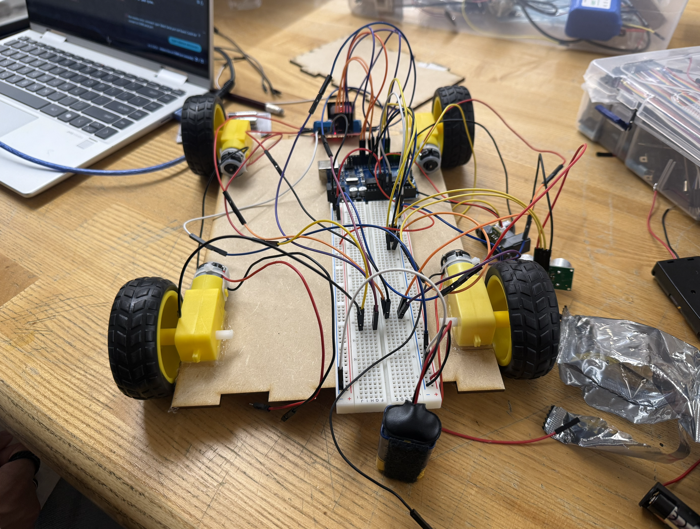
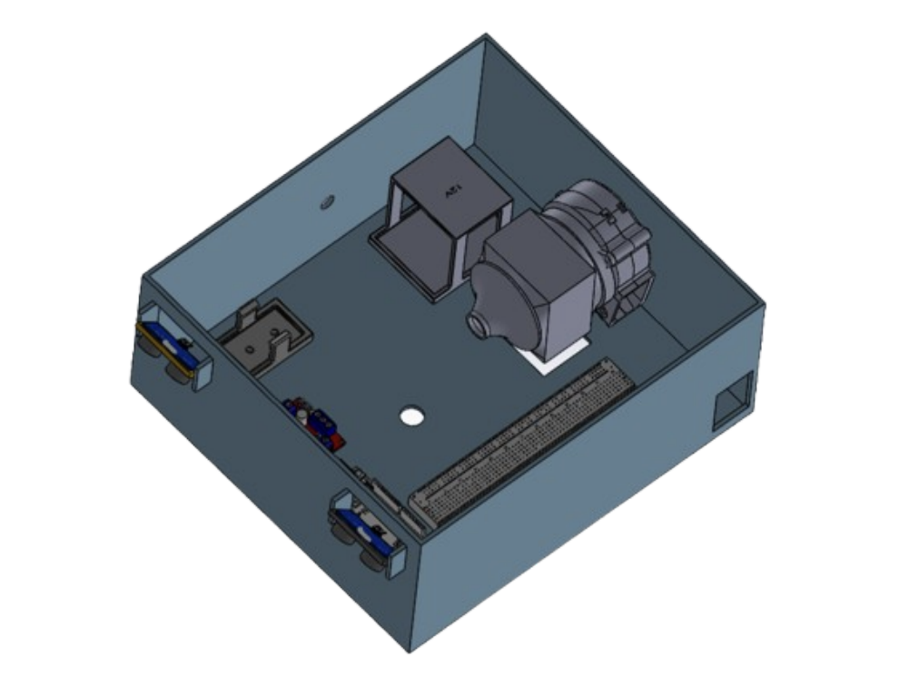
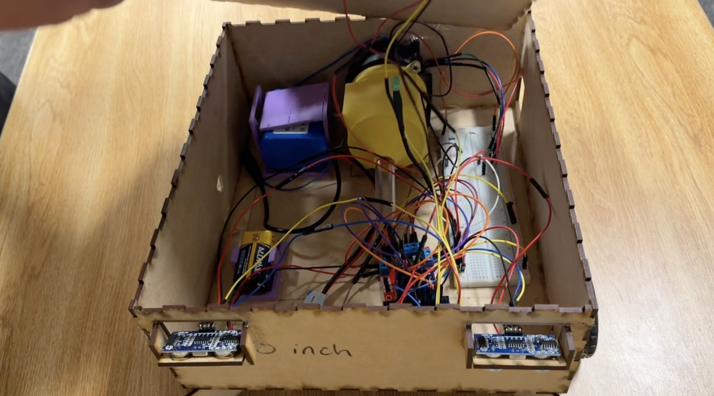
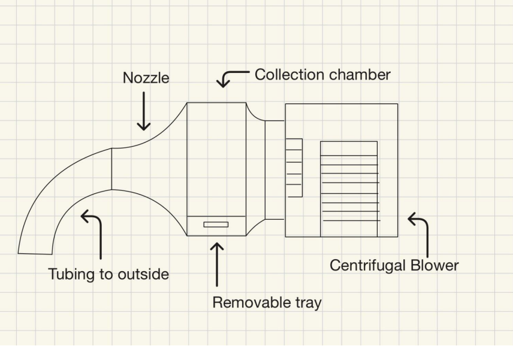
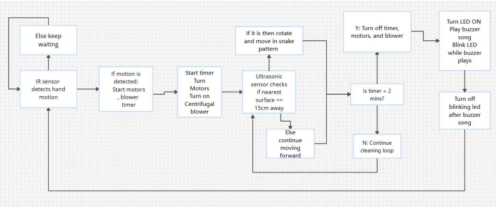
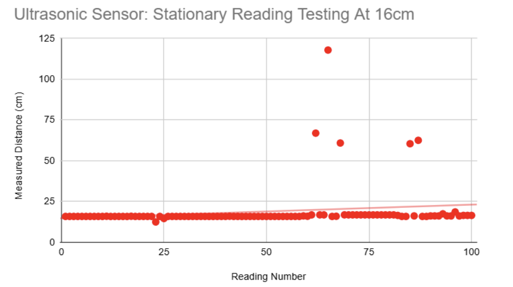

ENGINEERING DESIGN · SPRING 2026
THE DESKINATOR
Autonomous Desk-Cleaning Robot
A battery-powered autonomous cleaning robot designed to navigate desk surfaces, detect edges, and collect debris using an integrated vacuum system.

Final assembled Deskinator prototype.
PROJECT
EK210 Engineering Design
INSTITUTION
Boston University
TEAM
3 Members
DATE
Spring 2026
01 / PROJECT OVERVIEW
The Deskinator is an autonomous desk-cleaning robot developed to reduce the time and effort required to clean small workspaces.
The system combines an Arduino Uno, two DC motors, ultrasonic distance sensors, an infrared sensor, and a centrifugal vacuum system to autonomously navigate and clean a 4 ft × 4 ft surface.
Users initiate the cleaning process through a touchless hand gesture. During operation, ultrasonic sensors monitor the distance to the desk surface, allowing the robot to detect edges and perform avoidance maneuvers.
After two minutes, the system automatically stops and activates an LED and buzzer to notify the user that the cleaning cycle is complete.
02 / DESIGN OBJECTIVES
01
Autonomous Navigation
Navigate a 4 ft × 4 ft surface without continuous user control.
02
Edge Detection
Detect desk boundaries and perform avoidance maneuvers to prevent falls.
03
Debris Collection
Collect lightweight debris using a centrifugal blower and removable tray.
04
Touchless Operation
Activate the system using an infrared hand-wave sensor.
05
Time Constraint
Complete the cleaning operation within two minutes.
06
Budget Constraint
Develop a functional prototype within a $200 project budget.
03 / FINAL PROJECT DEMONSTRATION
The following video presents the completed Deskinator, its mechanical and electrical design, and a demonstration of its autonomous cleaning operation.
04 / ELECTRICAL SYSTEM DESIGN
The electrical architecture is built around an Arduino Uno microcontroller responsible for processing sensor inputs and controlling the robot's movement and cleaning operation.

Complete electrical circuit showing the Arduino, motor driver, sensors, and power connections.
System Components
Arduino Uno
Central microcontroller responsible for sensor processing and system control.
L298N Motor Driver
Controls the direction and speed of two DC motors using PWM signals.
Ultrasonic Sensors × 2
Measure distance to surrounding surfaces for edge detection and avoidance.
Infrared Sensor
Detects hand gestures to initiate touchless cleaning operation.
Centrifugal Blower
Generates suction for debris collection through the vacuum nozzle.
LED & Piezo Buzzer
Provide visual and audible feedback upon completion of the cleaning cycle.
Power Distribution
The Deskinator uses separate power sources for its drive system and vacuum blower.
- 9V battery supply for the drive system
- 12V rechargeable battery pack for the centrifugal blower
- L298N H-bridge for DC motor control
- N-channel MOSFET for blower switching
05 / MECHANICAL DESIGN & INTEGRATION
The final prototype uses a wooden enclosure measuring approximately 10 × 11 × 4.5 inches. The enclosure protects the internal components while providing openings for sensors, indicators, and the removable debris tray.
Prototype Development
The Deskinator underwent multiple design iterations before reaching its final configuration. Initial prototypes focused on testing the electrical system and motor functionality, while later iterations introduced the mechanical housing and component integration.


These iterations allowed us to evaluate motor operation, component placement, and the integration of the electrical and mechanical systems before completing the final prototype.


Two front-mounted DC motors provide differential drive, while two rear rollers support the robot. The internal layout accommodates the motor driver, Arduino, batteries, and vacuum assembly.
06 / VACUUM SYSTEM DEVELOPMENT
The debris collection mechanism consists of a nozzle, external tubing, collection chamber, removable tray, and centrifugal blower.
The blower creates a pressure difference that draws debris through the nozzle and into the collection chamber. A mesh filter prevents collected debris from entering the blower.

Vacuum system concept showing the nozzle, collection chamber, removable tray, and blower.
Vacuum Suction Testing
The vacuum system was tested independently to evaluate its ability to collect lightweight debris before final integration.
Centrifugal vacuum suction testing.
07 / SOFTWARE & AUTONOMOUS NAVIGATION
The Arduino control program coordinates touchless activation, motor movement, ultrasonic edge detection, vacuum operation, and completion notifications.

Control flowchart for the autonomous cleaning sequence.
Navigation Logic
- Wait for a hand gesture detected by the infrared sensor.
- Activate the drive motors, blower, and two-minute timer.
- Continuously monitor ultrasonic distance measurements.
- When an edge is detected, stop, rotate approximately 90 degrees, and resume movement.
- Continue following a snake-style cleaning pattern.
- After two minutes, stop the motors and blower, then activate the LED and buzzer.
08 / TESTING & VALIDATION
Infrared Sensor Testing
The infrared sensor was evaluated through repeated hand-wave detection trials. Testing demonstrated approximately 90% successful touchless activation.

Ultrasonic Sensor Testing
Ultrasonic distance measurements were recorded while the sensor was positioned approximately 16 cm from a stationary surface.
Most measurements clustered around the expected distance. However, occasional outliers between approximately 60 cm and 120 cm were observed.

These inconsistent readings highlighted the importance of sensor validation. Distance thresholds were incorporated into the control logic to reduce unintended avoidance maneuvers.
Debris Collection Testing
Three controlled trials were conducted using approximately 30 small pieces of paper per trial.
The vacuum system successfully collected all test debris in these trials, demonstrating 100% pickup success under the tested conditions.
09 / POWER CONSUMPTION ANALYSIS
Estimated power consumption was calculated using the electrical power relationship:
DC Motors
Each drive motor operates at a nominal voltage of 3V with an assumed current draw of 0.2A.
Centrifugal Blower
The blower operates from a 12V supply with an assumed current draw of 1.0A.
Total Estimated Power
Estimated motor and blower power only; control electronics and driver losses are not included.
10 / RESULTS & PERFORMANCE
2 MIN
Cleaning Cycle
~90%
IR Activation Success
100%
Debris Pickup in Controlled Trials
$105.19
Prototype Component Cost
The final prototype successfully demonstrated autonomous movement, desk-edge avoidance, debris collection, touchless activation, and automatic completion notification.
Although the robot did not achieve perfect full-area coverage, its snake-style navigation pattern covered a substantial portion of the target surface.
11 / ENGINEERING CHALLENGES & LESSONS
Motor Power Delivery
Initial testing revealed insufficient motor torque caused by incorrect voltage delivery. Troubleshooting emphasized the importance of verifying electrical behavior under load.
Blower Switching
An incorrect component was initially selected for blower control. Reviewing component datasheets and pin configurations helped identify the issue and reinforced the importance of component verification.
Ultrasonic Sensor Reliability
Inconsistent ultrasonic readings required repeated testing, sensor replacement attempts, and software adjustments to improve edge-detection reliability.
Key Takeaway
This project strengthened practical experience in embedded systems, circuit integration, motor control, sensor troubleshooting, and interdisciplinary engineering design.